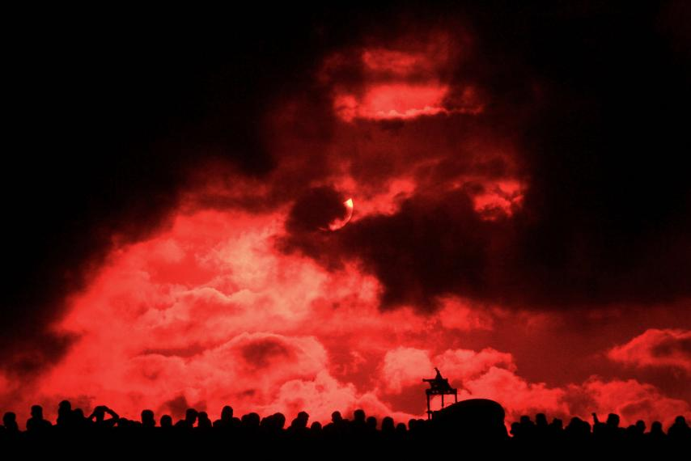

Tech & Science
Watch: Indonesia's Total Solar Eclipse
By Elisabeth Perlman On 3/9/16 at 12:33 PM
On the remote Ternate Island in eastern Indonesia, a total solar eclipse was observed on 9 March. A live stream set up by the Panasonic Eclipse Live by Solar Power project enabled viewers from all over the world to see the phenomenon.
According to the meteorological agency, Indonesia last witnessed a total eclipse in 1983 and it will be another 33 years until the next one, Reuters reports.
A solar eclipse takes place at least twice a year, when the moon casts a shadow on the earth as it passes between the earth and the sun. Most eclipses are partial but when the moon is close enough to the earth, the sun is completely eclipsed. The last total solar eclipse was in March 2015.
According to Nasa , the world's next total solar eclipse will occur in August 2017 and will be visible in the United States.